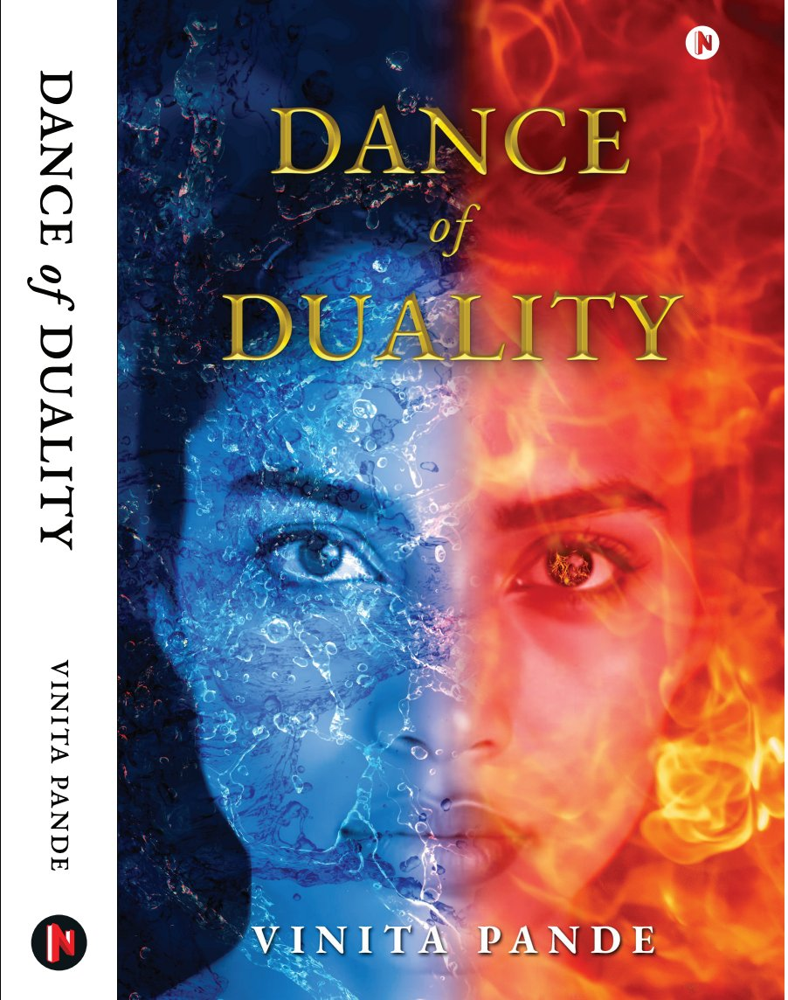
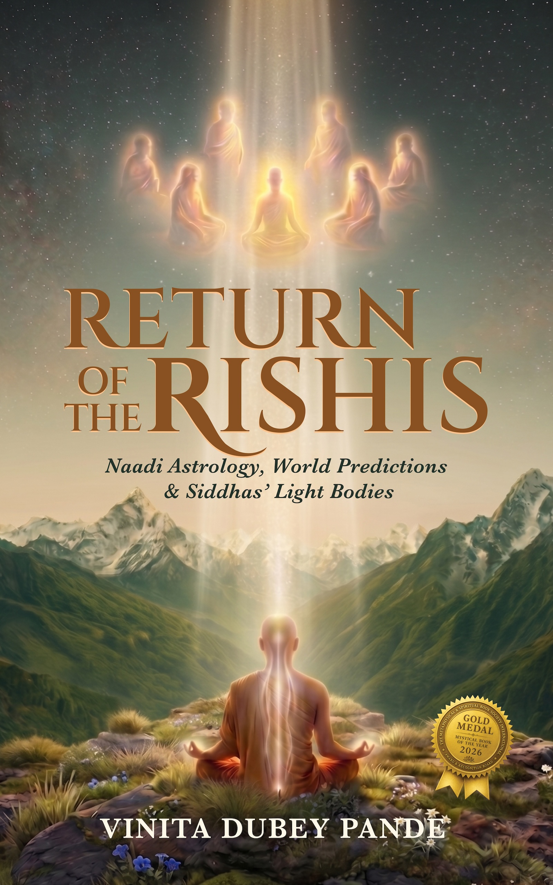

Three published works, and a fourth releasing June 18, 2026.

A novel about a woman's mystical journey interwoven with her worldly life. The story moves from the past, to the present, and a future yet to come, weaving the experiences of a Kashmiri woman named Lalla with current events, planetary shifts, and the practical fabric of daily life.
This is a unique and wonderful story of a character that is integrating all the different aspects of their life, from spiritual to practical to planetary and more. I enjoyed how all of these elements were woven together, including current events, to create a story that was at once mystical and also down to Earth. A fun and mind-opening read for anyone.
— Dr. Anoop Kumar, Bestselling Author · Featured on Gaia · Creator of healthrevolution.org
A mystical path to oneness. Self-published by Partridge (Penguin) India, this book explores the path of bhakti, devotion, through the lens of Lord Krishna while remaining accessible to devotees of any tradition.
Please leave a quick review on Amazon 🙏
In Merging With the Beloved, Vinita Dubey finds creative ways to illuminate the path of bhakti, or devotion, that touch the heart as well as the mind. Her focus is on Lord Krishna, but devotees of any manifestation of the Beloved, not just the Hindu deities, but forms dear to Christians, Jews, Muslims, Buddhists, and others, will find insights that enrich their paths.
— Philip Goldberg, Author of American Veda
Based on Vedic knowledge and published by John Hunt Publishing, this book documents Vinita's explorations into the ancient Hindu path of bhakti, the lessons she has learned, and her experiences along the way. Starting from disillusionment with the world and other human beings, she articulates her search for meaning and Bliss through the teachings of the Bhagavad Gita and her guru, Sri Sri Ravi Shankar.
Please leave a quick review on Amazon 🙏
I am happy you wrote a book on Hinduism. Love and Blessings.
— Sri Sri Ravi Shankar, Founder of Art of Living Foundation
Her acknowledgment of selfless service as a necessary prelude to meditation, so frequently overlooked in this day and age, is most welcome. "I have seen people talk the highest knowledge and not live the basics," she shares. "What's the point? It's useless. Better to live the basics and let the highest knowledge dawn naturally, like the ripening of a fruit."
— Sadasivanatha Palaniswami, Editor-in-Chief, Hinduism Today
A scientist's mind meets a five-thousand-year-old palm leaf, and nothing is the same again.
Naadi Palm Leaves, Vedic Sages, and the Path to Light. The record of an eighteen-month journey through Naadi traditions, ancient temples, and world predictions for the years ahead.
